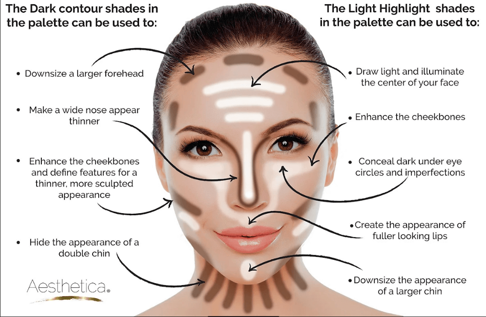

使用曲线匹配颜色 in Photoshop
之前介绍过几种色彩匹配的方法，通过对亮度、颜色、饱和度的进行匹配，也可以通过设置曲线的黑、灰、白场来匹配颜色。下面介绍通过通过提取源图像和目标图像的黑白灰色彩，然后通过曲线将他们进行色彩匹配达到最终的效果。
参考教程：
精细匹配颜色 in Photoshop
简易匹配颜色 in Photoshop
用到的技术：曲线，拾色器
之前介绍过几种色彩匹配的方法，通过对亮度、颜色、饱和度的进行匹配，也可以通过设置曲线的黑、灰、白场来匹配颜色。下面介绍通过通过提取源图像和目标图像的黑白灰色彩，然后通过曲线将他们进行色彩匹配达到最终的效果。
参考教程：
精细匹配颜色 in Photoshop
简易匹配颜色 in Photoshop
用到的技术：曲线，拾色器

人像面部的 dodge and burning 对提高立体感很有帮助，之前介绍过一些方法来进行这一步，比如通过灰度图层下的 overlay 混合模式配合笔刷工具，通过频率分离调整色彩图层的颜色分布等，下面介绍另一种简单高效的处理过程。
之前介绍过几种锐化方法：
下面介绍另一种通过 vivid light 配合高斯模糊的方式锐化且效果很好。

一张照片是否好看，首先要保证色彩没有偏色，也就是白平衡要正确，白平衡的调整之前介绍过通过 curve 曲线工具的，下面介绍精确匹配白平衡的方法，以及快速处理动作。
用到的技术：曲线，白场灰场黑场、auto option